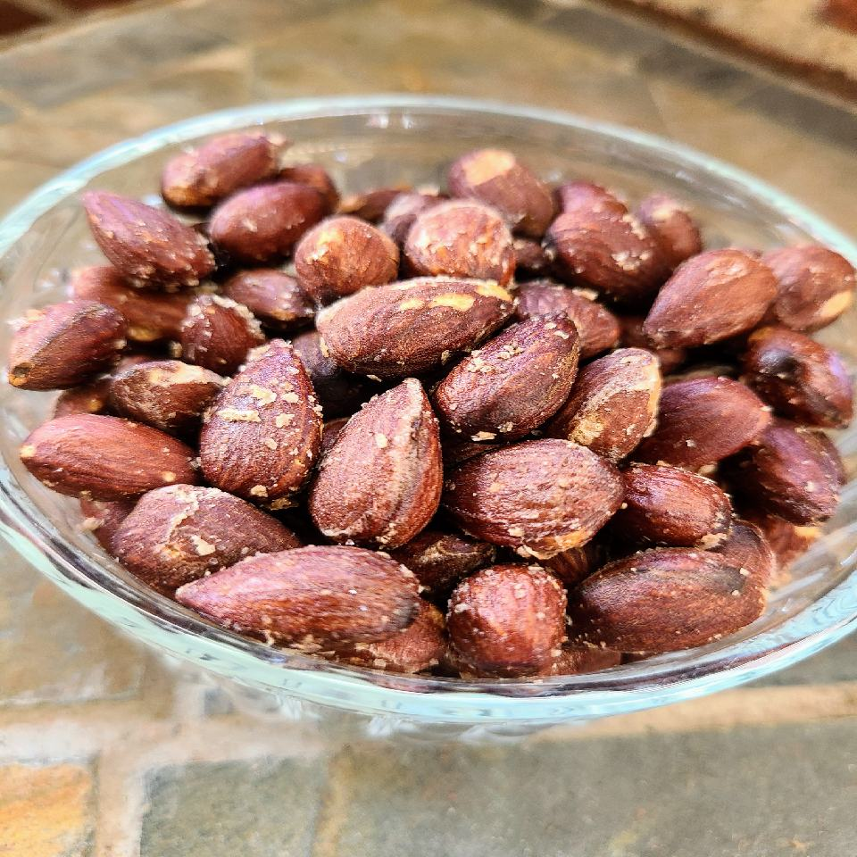

Air Fryer Roasted Almonds

Description
Roasted and salted almonds in the air fryer. Store in an airtight container to preserve freshness.
Ingredients
- ¾ tablespoon very hot water
- ¾ teaspoon Himalayan pink salt, or to taste
- 2 cups raw almonds
- 1 tablespoon olive oil
- salt to taste
Steps
- Preheat an air fryer to 325 to 350 degrees F (165 to 175 degrees C) according to manufacturer's instructions. Line a baking sheet with aluminum foil.
- Combine water and 3/4 teaspoon pink salt in a small shot glass; stir until salt is mostly dissolved.
- Place almonds in a medium ceramic or stainless mixing bowl and pour salt water over top; stir until coated. Spread almonds evenly on the prepared baking sheet.
- Bake in the preheated air fryer for 6 to 7 minutes. Remove baking sheet, stir almonds, and return to the air fryer; bake until almonds turn brown inside, 5 to 6 minutes more.
- Transfer almonds back to the mixing bowl, add olive oil and salt, and stir until completely coated. Allow to cool before serving, either in the bowl or spread out on the counter.